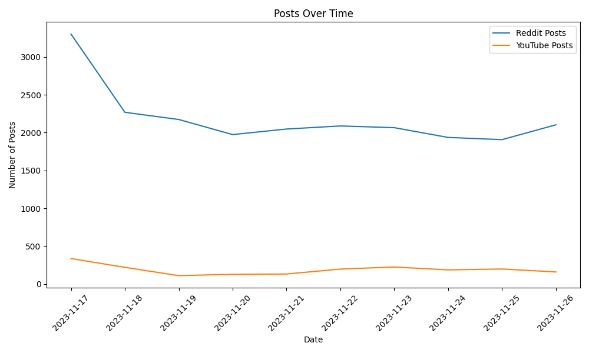
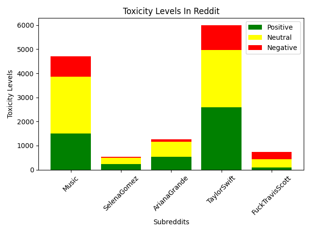
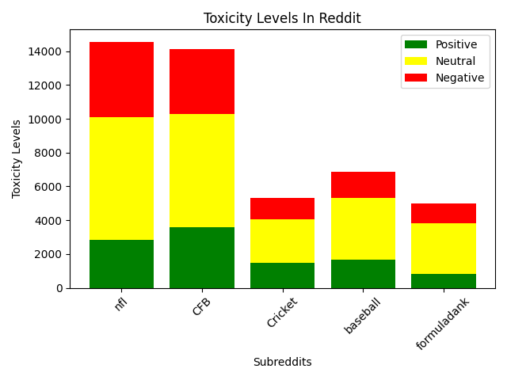
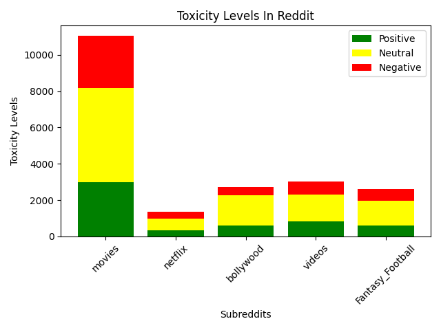

Plot Gallery
Plot 1: Dates wise posts record

This plot is about the user engagement for celebrities in reddit. Out of which Reddit posts were increased significantly.
Plot 3: Toxicity in Music - YouTube and Reddit

This is a plot that takes music celebritiesin account and shows which one of them were discussed most over public with most toxicity in Reddit and YouTube.
Plot 4: Toxicity in Sports - YouTube and Reddit

This is a plot that takes sports celebrities in account and shows which one of them were discussed most over public with most toxicity in Reddit and YouTube.
Plot 5: Toxicity in TV - YouTube and Reddit

This is a plot that takes tv celebrities in account and shows which one of them were discussed most over public with most toxicity in Reddit and YouTube.
Plot 6: Toxicity Scores- YouTube and Reddit
 }})
This is a plot that shows the overall Toxicity Score between Reddit and YouTube.
Plot 7: CDF Daily Views- YouTube and Reddit
 }})
This is a plot that shows the overall CDF of the daily view count between Reddit and YouTube.
 }})
 }})
 }})
 }})
 }})